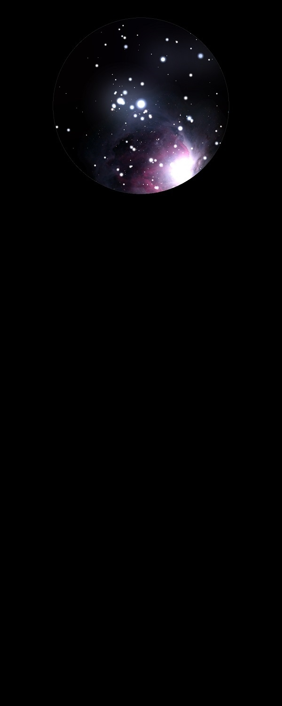

NGC 1980
Bright Nebula in Orion
NGC 1980
Mag 2.75
20/01/14
A bright glow surrounding the star I Ori (HIP 26241) at Mag 2.75
Just on the edge of The Great Orion Nebula, M42
I Ori looks to be a double star with a faint companion, widely
separated
08/01/15
Nice bright ball of nebulosity when viewed through the UHC
filter
In 25mm the whole FOV has interesting areas across it
16/01/15
In 18mm with UHC filter nebulosity around I Ori (HIP 26241)
forms a really bright halo around the star, and extends above to
HIP 26199 at Mag 4.75
08/12/15
Really bright glow around Hatysa, i Ori, 44 Ori, HIP 26241 which
seems to mark the bright extent of M42 which does however
encompass the double star HIP 26197A and B at Mag 5.60 and HIP
26199 at Mag 4.75
10/02/16
Back to Orion's sword, and the bottom nebula centred around Hatysa, i
Ori, 44 Ori, HIP 26241at Mag 2.75
A really large nebula, which would be a gem in it's own right
if it were not touching M42 as it's horns swing round to it
Really good in 25mm, with a nice contrast to the dark sky
around it away from M42
I don't know if NGC 1980 includes the really distinct oval
nebula which surrounds HIP 26197 at Mag 5.60 and it's
companion HIP 26199 at Mag 4.75, a very neat view in 25mm
06/03/24
A sparse Open Cluster with the associated nebula not visible in
20x80 binoculars
Not sure if the stars around Hatysa, i
Ori, 44 Ori, HIP 26241at Mag 2.75 are part of the Open Cluster
but Hatysa is itself three stars (at least!)